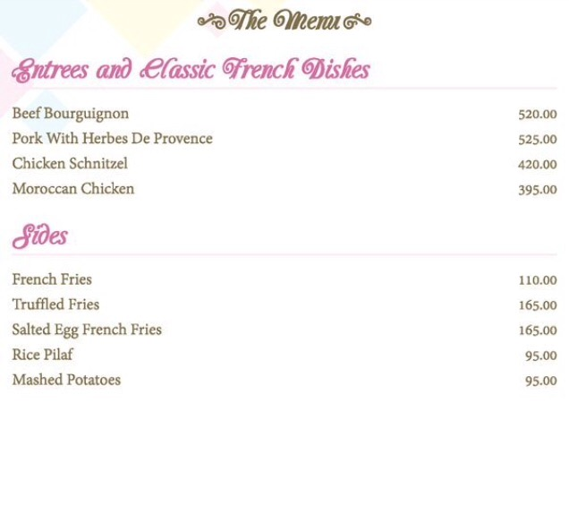
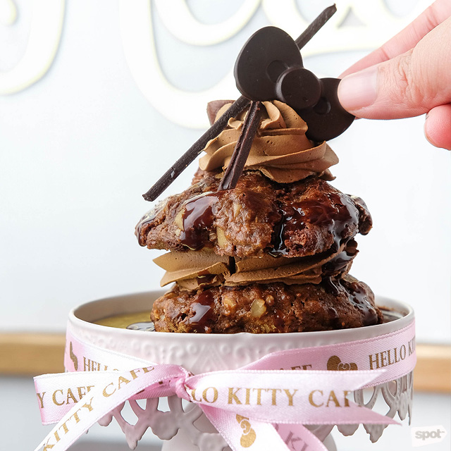
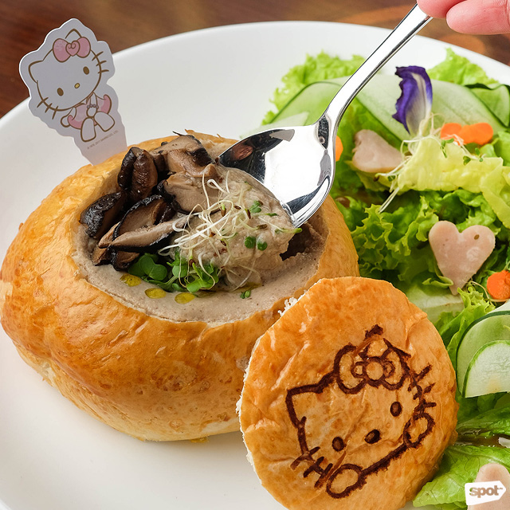
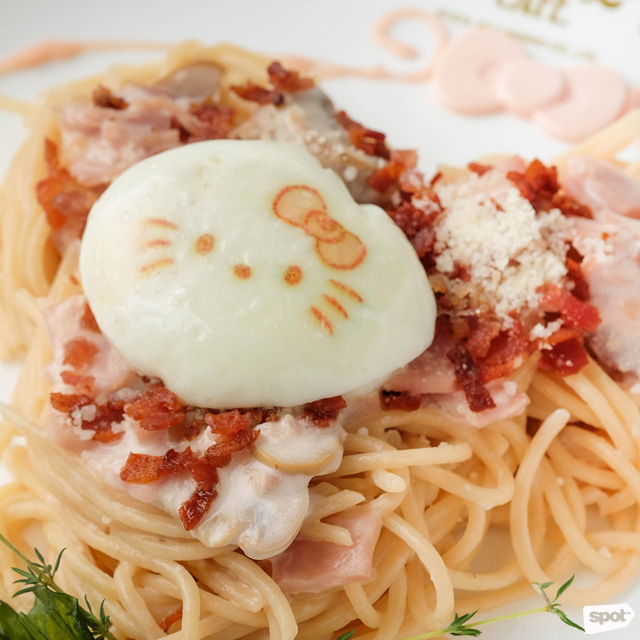

Welcome to Hello Kitty Cafe!


|

|

|

|
Check out their Best Sellers below!

Choco Chips
The Choco Chips (P179) has giant chocolate choco chip cookies with lots of strawberry syrup and strawberry cream.
 Espresso
Coffee friends may want to opt for the Espresso (P159), with dark chocolate and notes of coffee flavor.

Mango Charlotte
It's hard to decide whether you want to slice into the Mango Charlotte (P519/small, P1,999/large) or not; the white chocolate-Hello Kitty relaxing away in her tub is just too adorable. Take those pictures quickly because soon enough, you'll want to sink your fork into that decadent mango custard and soft broas

White Truffle Kirsch
The White Truffle Kirsch (P399) is sure to satisfy any sweet tooth. Dainty and elegant with strawberries brushed with edible gold and a candy, the white-chocolate coating hides a candy-like center of strawberry cream and strawberry jelly. A layer of coconut shavings underneath adds texture and balance.
Aside from sweets and pastries, Hello Kitty Café also carries savory items by Chef Khamir Doble. “The head of Sanrio decides what the theme of each café would be,” she shares. “For this café, they decided on French-inspired cuisine.” Still, nothing is too complicated to satisfy both kids and kids-at-heart.

French Gruyère Melt
Arriving as a sandwich practically buried with lots of gooey melted cheese, the French Gruyère Melt (P359) is sure to make any cheese lover's heart skip a beat. The sharpness of the Gruyere isn’t that pronounced, and there’s a hint of sweetness to it from its ham center, so this is sure to please even the pickiest kids.

Creamy Mushroom Portobello Mushroom Soup With Truffles
The Creamy Mushroom Portobello Mushroom Soup With Truffles (P265) is thick, hearty, and overloaded with Portobello mushrooms for a dish that’s rich in umami flavor, with a hint of nuttiness to give it a slight twist from the usual. You’ll be glad for the bread bowl it comes in because you’ll need it to soak this all up.

Creamy Pink CarbonaraThe sauce of the Creamy Pink Carbonara (P389) does come in a pastel pink hue and a runny egg stamped with Hello Kitty’s face. If you find yourself a little taken aback by the unorthodox color of this pasta, don’t worry because it tastes like the same carbonara you’re familiar with—creamy and slightly cheesy. This doesn’t skimp on the crisp bacon, either.
Source content: spot.ph
copyright © 2017 Best Viewed In: Google Chrome Best Viewed In Screen Resolution: 1366 x 768